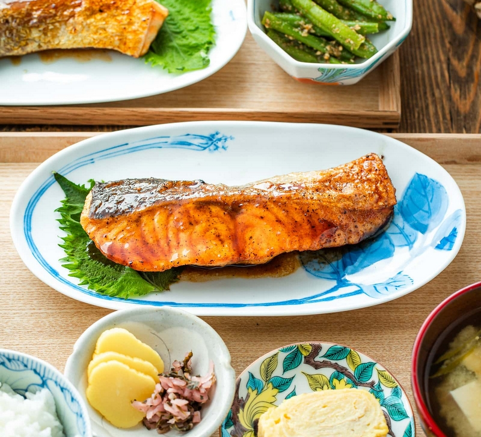

Home
Teriyaki Salmon

Description
Teriyaki (照り焼き) in Japanese actually describes a cooking method that first appeared in Japan in the 1600s. Teri (照り) means luster, and yaki (焼き) means grilled, broiled, or pan-fried. It essentially refers to any food cooked this way that's brushed with a shiny glaze called tare (タレ). Outside Japan, both the cooking style and sauce are commonly called teriyaki.
Salmon, chicken, yellowtail (hamachi), pork, and tofu are the most popular ingredients to cook teriyaki-style in Japan. Home cooks pan-fry them instead of cooking in an oven.
Ingredients
For the Teriyaki Sauce
- 1 Tbsp sake (or substitute Chinese rice wine, dry sherry, or water)
- 1 Tbsp mirin (or substitute 1 Tbsp sake or water + 1 tsp sugar)
- 2 Tbsp soy sauce
- 1 Tbsp sugar
For the Salmon
- 2 skin-on salmon fillets (¾ lb, 340 g; ¾ inch (2 cm) thick)
- ¼ tsp Diamond Crystal kosher salt
- ⅛ tsp freshly ground black pepper
- 1 Tbsp all-purpose flour (plain flour) (use cornstarch or potato starch for gluten-free)
- ½ Tbsp neutral oil (for cooking)
- 1 Tbsp unsalted butter (for cooking)
- 1 Tbsp sake (for steaming; you can substitute Chinese rice wine, dry sherry, or water)
Ingredients
To Make the Teriyaki Sauce
- In a microwave-safe bowl, combine the ingredients for the teriyaki sauce: 1 Tbsp sake, 1 Tbsp mirin, 2 Tbsp soy sauce, and 1 Tbsp sugar. Mix well to dissolve the sugar.
- To help dissolve the sugar, you can microwave the mixture for 30 seconds.
To Prepare the Salmon
- Rinse 2 skin-on salmon fillets and pat dry. Season one side with some of the ¼ tsp Diamond Crystal kosher salt and ⅛ tsp freshly ground black pepper. Tip: The salmon skin will hold the flesh together while cooking.
- Flip over and season the other side with the remaining salt and black pepper.
- Sprinkle half of the 1 Tbsp all-purpose flour (plain flour) on one side of the salmon and coat evenly. Tip: Coating the salmon with flour helps retain its umami flavor and juiciness. It also helps absorb the sauce and thickens it.
- Flip over and sprinkle the rest of the flour on the other side. Gently press it to adhere, then remove the excess flour.
To Cook the Salmon
- Heat a frying pan over medium heat. When hot, add ½ Tbsp neutral oil and 1 Tbsp unsalted butter. Do not burn the butter. If the pan gets too hot, reduce the heat or move the pan off the heat temporarily. Next, sear the salmon skin: One fillet at a time, press the skin against the hot pan's surface for 15 seconds before laying the fillet skin side down in the pan. Repeat with the other fillet. Tip: The presentation side (the skin side) should go into the pan first because you will get the best browning on the first side that hits the clean pan.
- Cook the salmon for 3 minutes until the bottom is golden brown, and then flip.
- To the pan, add 1 Tbsp sake—1 Tbsp for thin fillets and no more than 2 Tbsp for thicker fillets. Cover the pan with a lid and reduce the stove's heat to low. Steam the salmon for about 3-5 minutes, depending on the fillet thickness. If the sake has evaporated but the salmon isn't cooked through yet, add another tablespoon of sake and continue steaming.
- Cook the salmon until it registers an internal temperature of 125-130°F (52-54ºC) at the thickest part of the fillet (I use a Thermapen instant-read thermometer). Then, transfer the salmon to a tray or plate. These fillets were about ¾-1 inch (2-2.5 cm) thick and took roughly 4 minutes to cook. Tip: The USDA recommends cooking fish to an internal temperature of 145°F (63ºC); however, the residual heat will continue to cook the salmon, so you must remove the fillets at 125-130°F (52-54ºC) to avoid overcooking.
- Add the teriyaki sauce ingredients to the pan and increase the heat a bit. When the sauce starts to boil, add the salmon back to the pan.
- Spoon the sauce over the salmon. When the sauce thickens, turn off the heat. Transfer the salmon to a plate and drizzle the sauce on top.
To Store
- You can keep the leftovers in an airtight container and store in the refrigerator for up to 3 days and in the freezer for 2 weeks.